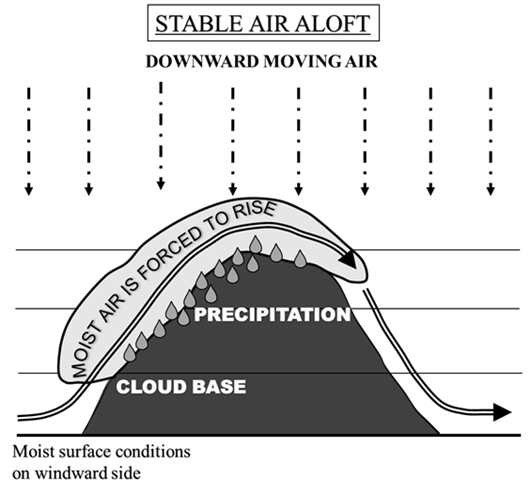
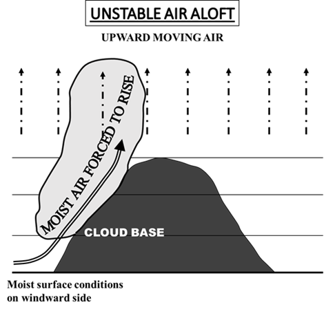
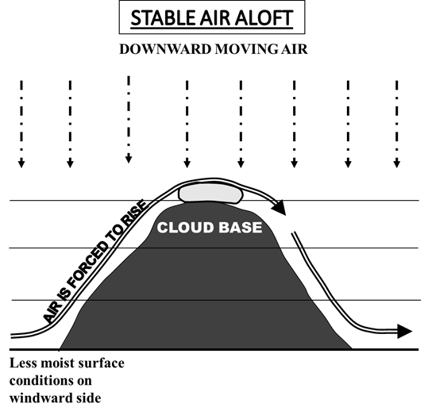
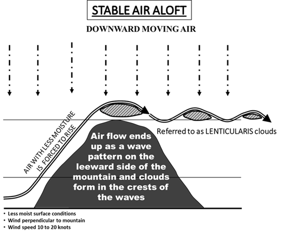
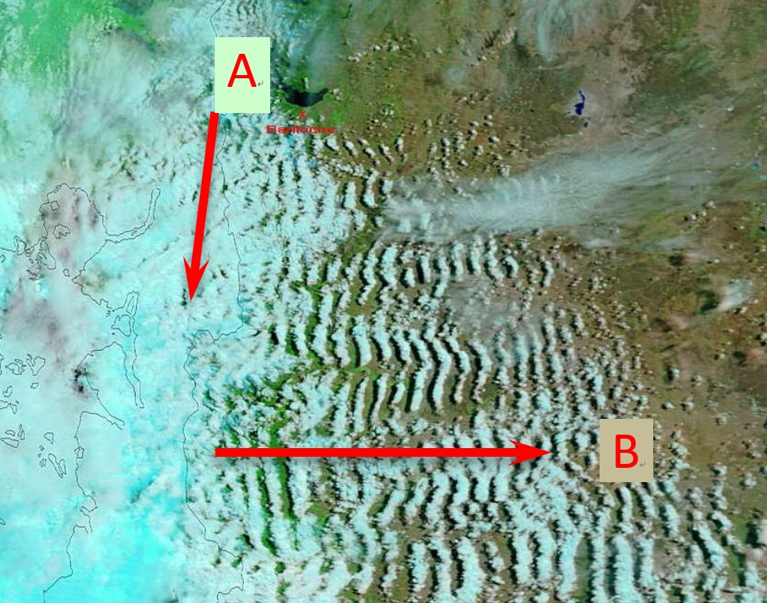
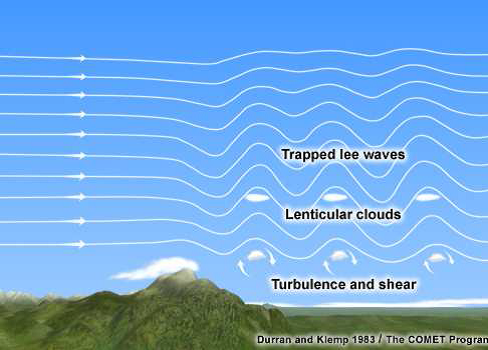
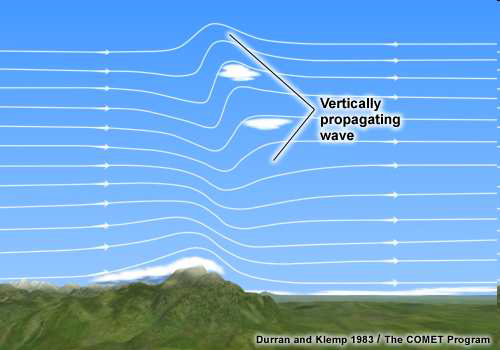
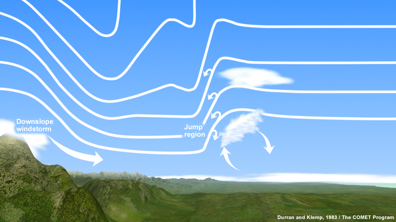

雲に対する地形の影響(Section 2.4)
目次
はじめに(Section 2.4.1)
丘、山、または尾根を越える気流において、地形性の雲は障害物の頂上の下、頂上、またはその上に発生する可能性がある。対流圏の地形性の雲は、10の雲の類（Genera）のいずれの通常の特性とも著しく異なる場合があるが、対流圏の地形性の雲は常にこれらの類のいずれかに分類される。
地形が気流に与える影響により、風上側で雲が発達または強化されるが、これらは一般に風下側では下降運動により消散する。
障壁を横切る流れは、大気の状態と地形の特性に応じて、風下側に山岳波を発生させることがある。時折、風下側の空気の振動により、そのような波の波頭にレンズ雲（lenticularis）が形成されることがあるが、これは地形による気流の変化の兆候である。

英国イングランド、ペナイン山脈の風下におけるレンズ状高積雲
これらのレンズ状高積雲は、英国イングランドのヨークシャー・ペナイン山脈の上空およびそのすぐ風下に形成されたもので、北緯60度、西経26度付近を中心とする低気圧の広い暖域内に発生した。この暖域は、ビスケー湾を中心とする1034 hPaの高気圧の北側面に沿った高気圧性の曲率を持つ、安定した西から南西の気流を特徴としていた。
雲は現地時間の11時00分から15時30分までの数時間持続したが、14時00分から15時30分の間に最もよく形成された。この期間中、最も大きな雲はほぼ停滞した南北に伸びる帯状に形成され、その軸はヨークシャー・デイルズのペナイン山脈の最高峰から東へ約20〜30 km離れた位置にあった。衛星画像は、雲頂高度が6,000 m（20,000フィート）から7,500 m（25,000フィート）以上の範囲にあることを示していた。ディッシュフォースおよびリントン・オン・ウーズにある英国気象庁のレーザー雲底計は、5,200〜5,500 m（17,000〜18,000フィート）の範囲の雲底高度を検出した。午前中に下層の層積雲（Stratocumulus）が消散した後、これらの雲はイングランド北部の大部分から視認できた。

レンズ状層積雲 – 波状雲
この写真は、風下に向かって見下ろした層積雲（Stratocumulus）（種（Species）としてはレンズ雲（lenticularis））の珍しい光景を示している。側面から見ると、レンズ雲はしばしばレンズやアーモンドの形をした一連の波を形成し、通常は輪郭がはっきりしており、一般的に地形に起因する。この画像では、撮影者は600 mを超える英国北アイルランドのモーン山脈の山頂から5 km以内の場所にいた。強い境界層の風が山脈の風上側に気流を押し上げ、この光景は風下側における補償的な下降流を示している。撮影者のすぐ目の前では、雲が消散して明確な隙間（スロット）を残している。遠くには、一連の波の次の波が見える。隙間を通して、少量の巻雲（Cirrus）と高積雲（Altocumulus）も確認できる。
最も一般的な地形性の雲は、高積雲（Altocumulus）、層積雲（Stratocumulus）、および積雲（Cumulus）の類（Genera）に属する。
山岳地帯において雲を観察することは重要である。なぜなら、それらは安全性に影響を及ぼす可能性のある天候の変化の兆候を提供する可能性があるためである。
風上側における地形の影響(Section 2.4.2)
気流が山や丘に遭遇すると、強制的に上昇させられる。これは地形性の上昇（orographic lift）と呼ばれる。気流が十分に湿潤である場合、山地の風上側に雲が形成され、それらは地形性の雲と呼ばれる（図2）。

図2. 安定した状態で風上の湿度が高い場合の地形性の雲
形成される雲のタイプは、大気の安定度と水分量に依存する。空気は日中の加熱によっても斜面を上昇するため、地形性の上昇と熱的上昇の両方がしばしば一緒に作用し、背が高く鉛直に発達した積雲（Cumulus）を生成する（図3）。したがって、丘陵地帯は近隣の低地よりも雲が多いことがよくある。

図3. 不安定な状態で風上の湿度が高い場合の地形性の雲
山地または丘陵地帯の上に到達した既存の雲が、障害物と同等の高度に位置している場合、地形の結果としてその形状や構造が変化する可能性がある。雲はより密度が高くなり、水滴や氷粒子のサイズと濃度が増加し、しばしば鉛直方向により大きく発達する。これらの雲は尾根を冠するように覆うことがある。降水が始まるか、またはその強度が増加する可能性がある。特に海の近くに位置する障壁の場合、障壁の風上側で激しい地形性降水が発生することが非常に多い。地形性降水強化（orographic enhancement of precipitation）と呼ばれるこのプロセスは、地形とは関係のない特定の総観規模の条件を必要とする。
雲は風下側で薄くなり消散するが、そこでは地形が下降運動を引き起こし、降水量は著しく少なくなる（雨蔭）。孤立した山の場合、地形性の雲はしばしば山を取り囲む襟（カラー）の形、または山頂を覆う頭巾（キャップ）の形（図4）をとることがあり、どちらもかなり対称的である。これらの雲は、降水をもたらさないか、もたらしたとしてもわずかである。風下側から観察された山岳障壁の場合、頭巾雲（cap clouds）は下流での波の活動の可能性を示す。時として、雲は山の等高線に沿った土手や壁のように見えることがある。それらが存在しないからといって、波が存在しないわけではないことを覚えておくことが重要である。より乾燥した条件下では、頭巾雲を伴わずに波が存在する場合がある。

図4. 安定した状態で風上の湿度が低い場合の地形性の雲
風が強い場合、山頂付近に形成された地形性の雲が風下側の山から離れて流れていくのが観察されることがある。これは旗雲（banner cloud）であり、尾根や山頂から吹き飛ばされた雪と混同してはならない。

レバンター雲（Levanter cloud）
「レバンター雲」は、ジブラルタルのザ・ロック上空における、湿潤で安定した東風の中で形成される旗雲に与えられた固有の名称である。

地形性の旗雲
この停滞した波状雲は、ロシア最高峰であるエルブルス山の双耳峰上空の、強く安定した比較的湿潤な気流の中に形成されている。山頂の風下に向かって伸びる旗、ペナント、または横断幕（バナー）のような外観をしており、観測地点からは層積雲（Stratocumulus）のレンズ雲（lenticularis）として分類される。上空の高積雲（Altocumulus）も、山を越える気流によって引き起こされた波のパターンを示している。
風下側における地形の影響(Section 2.4.3)
安定した環境において、障壁（山など）に対して垂直に吹く強風は、風上側で強制的に上昇させられ、風下側の斜面に沿って下降する。乱された気流は下流へ移動するにつれて一連の波となって振動し始め、山岳波（mountain waves）を発生させる。
空気が波を通り抜ける間、波が基本的に停滞したままである場合、それらは非乱流の定常波または定在波（および捕捉された風下波：trapped lee waves）と呼ばれる。空気が十分に湿潤である場合、波頭の上昇気流の中に地形性の雲が現れることがある（図5）。それらは山脈の上空または風下に形成されることが最も多く、通常は数時間（1日を超えることは稀である）停滞したままである。
地上の観察者にとって、雲レベルの風が強い場合であっても、これらの雲は動いたとしても非常にゆっくりと動くように見える。特定の場合には、雲の中の模様、例えば、雲の端から端へと移動する個々の要素によって風速が明らかになることがある。山岳波によって生成されたこれらのレンズ雲（lenticularis）の形をした雲は、大気中層の安定した層における強風の兆候である。これらは降水をもたらさない。

図5. 山岳波
時折、これらの波は「風下波列（lee wave trains）」として長距離を伝播するため、その影響はかなり離れた場所でも感じられることがある。それらは、数キロメートルの一定の間隔で、山脈と平行に長い帯状に連なっているのを見ることができる（図6）。
衛星画像では、それらは流線型のパターンを形成する。

図6. 風下波列の衛星画像（A = 山脈の配列、B = 風向）
波状雲は、異なる高度で同時に現れることもある。しばしば、丘や山の上空、時にはわずかに風上または風下に、1つまたは複数重なった地形性のレンズ雲（lenticularis）が現れる。気流に対する地形の影響は、山頂や尾根の高度を何倍も超える高度で顕著になることがあり、成層圏に達することもある（図7）。

図7. 捕捉された風下波
幅の広い山脈において、大気の層全体にわたって高い大気安定度があり、山頂より上に顕著な鉛直シアがある場合、エネルギーが上方に伝播する鉛直伝播波が発生することがある。これらは非捕捉風下波（untrapped lee waves）と呼ばれ、地形の影響により形成された巻雲状の雲（図8）は、対流圏上部付近の乱気流の指標となる。時として、波の頂上は高高度を超えて成層圏まで達することがある。

図8. 鉛直伝播波
丘と雲の間に明確な隙間（フェーンギャップ）がある場合、乱気流は激しくなる可能性が高い。丘と雲の間に明確な隙間がない場合、乱気流は弱い可能性が高い。

フェーンウォール、フェーンギャップ、およびレンズ雲
この写真は、局地的にゾンダ風（Zonda wind）と呼ばれるフェーン風の発生時に、アンデス山脈の東側にあるアルゼンチンのある場所から撮影された。画像には、フェーンウォール、そして下流にはフェーンギャップとレンズ雲（lenticular cloud）が写っている。
フェーンウォールは、フェーン風の発生時に尾根の上やそれに沿って横たわる雲の形成物であり、山の風下にいる観察者には雲の壁のように見える。フェーンウォールは、山脈の風上側に存在する雲の東側の限界を示している。
フェーンギャップは、尾根のすぐ下流にある雲のない領域であり、山脈の風上側にある雲と、風下側の下流にある風下波のレンズ雲との間にある。
また、写真で注目すべきは、暖かく乾燥した強い下降斜面のフェーン風（ゾンダ風）によって巻き上げられた土砂（風塵）である。
雲の証拠は空気の動きや乱気流の兆候となるが、視覚的な指標なしにこれらが発生することもある。晴天乱気流は、乾燥した条件下での鉛直伝播波により、対流圏界面付近でしばしば発生する。
特定の時間には、山岳波の振幅が高い値に達することがあり、波のエネルギーが尾根のすぐ風上で下方へ伝播し、山岳障壁の風下側で砕波、強い乱気流から極端な乱気流、ローター、および被害をもたらす下降斜面の暴風などの顕著な気象現象を引き起こす。
風下波の雲の下、下層において、水平軸を持つ大きな渦を巻く渦流が形成されることがある（図9）。この大きな停滞した渦の上昇気流が十分に冷却されると、上部に「ローター雲（rotor cloud）」（ロール雲：roll cloud）と呼ばれる帯状の雲が現れることがある。ローター雲またはロール雲は、地表または地表付近における激しい乱気流の領域を示すものであり、地上風の風向や風速が極めて変動しやすいため、航空機に対する危険を提示する。

図9. ローター雲
画像ギャラリーから (From Image Gallery)

レバンター雲
「レバンター雲」は、ジブラルタルのザ・ロック上空における、湿潤で安定した東風の中で形成される旗雲に与えられた固有の名称である。この特定の例では、風はジブラルタル空港上空10 mの高度で18ノット（9.3 m/s）であった。ザ・ロックの頂上ではさらに強かっただろう。
写真では、山頂のすぐ上と風下に停滞した波状雲が形成されている。これが旗雲である。しかし、写真の右側、さらに風下の西側では、積雲（Cumulus）の対流性の発達に十分な水分と加熱もある。積雲の雲底が層積雲（Stratocumulus）のレンズ雲（lenticularis）（旗雲）と同じ高度にあるため、コーディングはCL = 2となる。

分離したペナント、または旗雲
この写真は、ジブラルタルのザ・ロックの頂上で強風の中で形成された、分離したペナント、すなわち旗雲を示している。ジブラルタルのザ・ロック上空の安定した東風の中で形成される旗雲の固有の名称は、「レバンター雲」である。

旗雲
旗雲は、孤立した山頂に付着し、そこから風下に向かって伸びる停滞した地形性の雲である。この雲は、山頂の風下側で旗、バナー、またはペナントのように見える。この写真は、アルプス山脈のマッターホルンによって形成された典型的な旗雲を示している。
この雲は、山頂の風下における圧力の低下と風下側の渦における空気の隆起の組み合わせにより、かなり強い風と比較的湿潤な空気の条件下で形成される。

地形性の頭巾雲
この写真の主な特徴は、画像の中央にある日本の富士山（3,776 m）の山頂にかかる地形性の頭巾雲である。
頭巾雲は、安定した気流の中で、湿潤な空気が山の風上側を上昇し、冷却されて飽和状態になり、雲を生成する際に形成される。空気は雲の中を通り抜ける間、雲は停滞したままであり、風下側に空気が下降するにつれて蒸発する。頭巾雲は種（Species）であるレンズ雲（lenticularis）の一形態であり、この例は高積雲（Altocumulus）のレンズ雲である。

高積雲のレンズ雲とローター雲
この写真は、フェーン風の発生時におけるアンデス山脈の風下の地形性の雲を示している。中央と右側に顕著なのは、高積雲（Altocumulus）のレンズ雲（lenticularis）の波状雲である。複数の波の層が見られ、変種（Varieties）の二重雲（duplicatus）を示している。上空には地形性の巻雲（Cirrus）が形成されている。積雲（Cumulus）の列は、水平軸に沿って回転する空気の渦であるローター上に形成された可能性が高い。画像の左側にあるのは、層積雲（Stratocumulus）の土手である。

地形性の層積雲
ボラ（bura）は、ディナル・アルプス（ヴェレビト（クロアチア）、ディナラ（ボスニア・ヘルツェゴビナおよびクロアチア）、およびビオコヴォ（クロアチア）山脈）の風下側にあるアドリア海東岸沿いで時折発生する、強く突風を伴う北東の下降斜面風である。この写真は、ボラ風の発生時にクロアチアのヴェレビト山脈上空で時折発生する典型的な地形性の雲を示している。